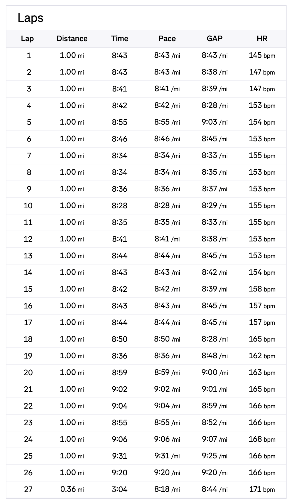
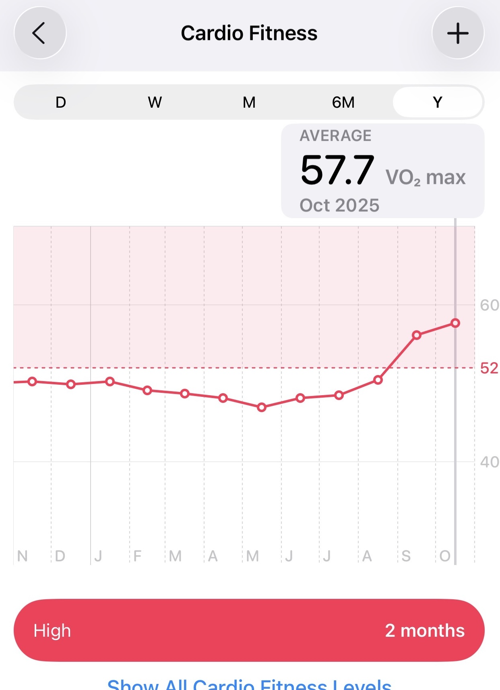
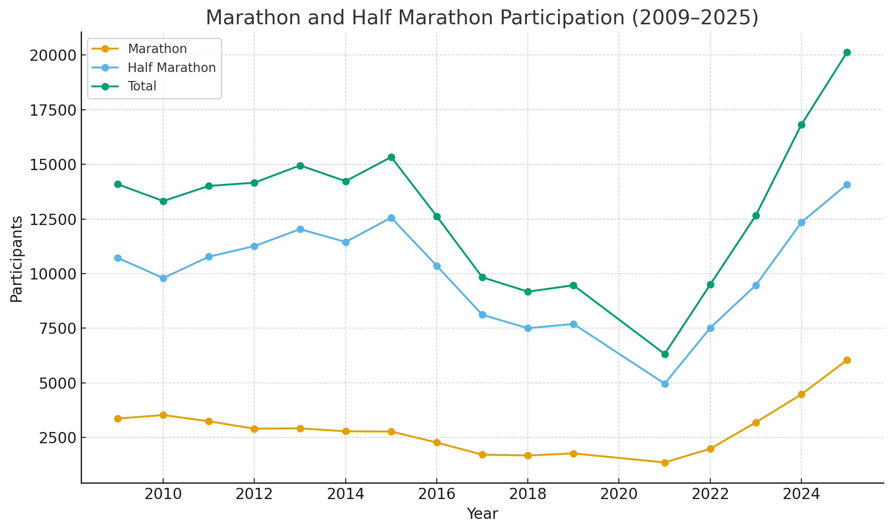

First Marathon Reflections
I did it. I ran a marathon. Long Beach 2025 Marathon is finished. What an amazing race day and training block. I’ve heard that a race is a celebration of the training you have put in. That rings so much truer now that the race is over. All those easy runs, tempo/interval runs, long runs on Saturday or Sundays. It’s been a long journey with many ups and downs along the way.

Race Report
The race didn’t start out great. Parking was a pain. It felt way more crowded than last year.The spot I booked turned out to be not open. But the weather was good at the start. I started out in the 3:45-4:15 corral and I found myself with the 3:50 pacers and stuck with them for probably the first half of the race. The first half of the marathon was relatively easy since it was the same as last year’s HM course. When the course split and then rounded CSULB, it got tough around mile 18 because of the hills, the unfamiliar course and some pain in my left foot. I tried my best to dig deep at that point and just push through. Thankfully the pain was tolerable and didn’t get much worse. I then had some more pain in my right leg at mile 22 but mentally the end felt pretty close. Seeing people cramp up left and right didn’t help my confidence. The course narrowed a lot at mile 23-25 so it was hard to maintain a sub 9 pace but I don’t think I could’ve physically managed that so it was God’s mercy on me. I imagine if I pushed hard the last 6 miles I could’ve tried for sub 3:50 but didn’t want to get greedy and also didn’t want to get hurt. I ended up finishing with a time of 3:52:12 which is about a 8:51 min per mile pace. I was and am so happy with this result.

The above were my mile splits. Starting around mile 20 was when I started to slow down. Heart rate started creeping up too. I still had some left in the tank the last stretch though!
Race Goals
My goals for the race were:
- Goal A: to train for it in a way that most glorifies God
- Goal B: not get injured
- Goal C: Go sub 4-hours
By God’s grace, I was able to achieve all those goals!
Training in a God Glorifying Way
Since starting to run in 2024, I had run two previous half marathons that I wrote about here and here. I had wanted to run a full marathon before turning 40 and I thought the Long Beach Marathon would be a good fit since the majority of the training would happen during summer months when I had more time because my church’s Bible study is on break. In training for the two half marathons I’ve done, there were times I prioritized preparing for it over other more important responsibilities like my family. I told myself I had to be able to prioritize the right things first before even considering training for the full. I tried my best to do my long runs early Saturday or Sunday morning and to be back in time before my kids woke up. It didn’t always work out and I definitely had to sacrifice some time spent with my wife and kids if I otherwise wasn’t training.
Not Get Injured
My B goal was to not get injured. I’ve had a number of serious leg injuries playing basketball. I’m really grateful God has allowed me to run still and now run longer distances. I have yet to have a serious injury yet while running. The pain in my left foot and right leg wasn’t manageable during the race. Going for sub 3:50 crossed my mind but the risk of blowing up and getting hurt also crossed my mind. I tried running 5 days after the race but my foot still had a little pain. The same thing happened a week later. In total I took 2.5 weeks off after the race to let my foot heal.
Run sub 4 hours
To run a sub-4-hour marathon, you have to maintain a pace of 9:09 min per mile. I used Runna again to train for my marathon. I thought the app prepared me well for the race. About 4 weeks out, I was pretty confident I was going to be able to run sub 4. Runna had me do a Race Practice Long Run that was 22 miles with 12 miles of race pace (at the end!). That was by far the hardest workout mentally and physically. But completing that workout gave me confidence that sub 4 was going to be do-able since I was able to do the 12 mile block at a 9:08 pace. Going into race day, I felt like I had put in the necessary work and it was just time to reap the fruit and enjoy the race. Praise God I was able to cross the finish line 8 minutes faster than my goal at 3:52:12. You can see the official results here.
Lesson 1: Training was the most valuable piece
My training block:
- May 5, 2025 to Oct 5, 2025
- 152 days
- 20 weeks
- ~100 runs
- ~600 miles
- 28 miles per week
- 95 hours, 4.4 hours per week
- 4 19+ mi runs
- 14 10+ mi runs
Reflecting on the training block numbers, it was 20 weeks at about 30 miles per week. I spent 95 hours running or 4.4 hours per week. For this block I also added strength training at around once a week. I ran 19+ miles 4 times.
The race being around 4 hours was <5% of the total time. So 95% of the time related to the marathon was spent training for it. This makes me think about all of the sports I watch, 95% of the time and effort has already been put in. I imagine this also applies to any sort of public performance (musical, comedy, etc). Simply going through the training my VO2 max has improved going from 43.7 in May 2024 to 57.7 in October 2025.

I started running because I wanted to be able to do normal activities like play with my grandchildren in my 70s and 80s. I’m so grateful to have gotten to this point of having better cardio fitness (as measured by VO2 max). I feel better physically. I have clearer thinking. I have more energy through the day.
It’s been awhile since I’ve set a goal and worked for many months to accomplish that goal. Training for a marathon and using a training plan through Runna (though there are many other plans too), broke this down into manageble pieces. It was 20 weeks with 5 scheduled runs per week. The app took much of the mental strain of planning runs (tpye of runs, distance) which I really enjoyed. It’s so meaningful looking back to put my mind and body toward a goal and then finally accomplishing it. Going through this journey with running challenges me to set goals in other areas of life to grow in.
Lesson 2: There are so many facets to improving as a runner (or anything else)
There are so many different facets to improving as a runner. There are the different types of runs you can do: easy, tempo, intervals, progression runs, fartlek, long runs, strides, long runs with race pace blocks, etc. There’s also strength training, nutrition (in general) and during runs. There’s running shoes and other gear. There’s all these metrics you can look at: pace, heart rate, VO2 max, cadence, stride length, etc. And I’m only 1.5 years into this running journey.
There are different types of practicing, depending on what your goal is. For the marathon training block, I had less speed work. Much more of the time was spent extending the long runs from 13 miles (in a half marathon training plan) to 22 miles. I actually don’t think I improved my 1 mile, 5k, 10k or half-marathon time.
To grow in any area, it’s important to keep in mind the different types of knowledge and the different types of practice in that domain. For example:
- Personal finances:
- knowledge: understanding taxes, knowing different investment accounts (Roth IRA, Backdoor IRA, Megabackdoor Roth, HSAs)
- practice: managing spending/saving, growing your income, being a disciplined investor, opening different accounts, taking advantage of credit card rewards, giving
- Professionally in AI, ML, Data Science, AI Engineering:
- knowledge: how businesses work, what tidy data is, how machine learning models work, how language models are trained, different types of services a cloud provider has, MLOps best practices
- practice: working with data, how to use a command line, git and other topics, using languages like SQL/Python, training ML models, creating an AI agent with different AI frameworks, understanding the mechanics of agentic coding
- Prayer:
- knowledge: understanding what prayer is, studying the different types of prayers in the Bible
- practice: praying differnt types of prayers like adoration, confession, thanksgiving, supplication, prayer walks, secret prayer, corporate prayer, prayer with spouse, prayer with kids
- Bible:
- knowledge: understanding the reliability of the Bible, different genre’s of the Bible (I really benefitted from Fee’s How to Read the Bible for All It’s Worth), understanding different types of theology: Biblical Theology, Historical Theology, Systematic Theology and Practical Theology (I’ve learned a lot from DeRouchie and Naselli’s books on Old Testament and New Testament Exegesis)
- practice: there are different ways to grow in the Word. Devotions (reading 1 chapter a day, reading a few verses at a time, reading 4 chapters a day (Disciples reading plan, Piper likes this), reading 1 book of the Bible a day (JMac)), there’s doing inductive Bible study by reading one passage (reading multiple translations, understanding the context, asking questions), doing deeper study Biblical theology type study on a topic like what is the temple and how that idea develops between the OT and
This applies to all kinds of topics like:
- reading
- writing
- marriage
- parenting/kids
- lifting weights
- eating / nutrition
- fishing
- camping
- learning a music instrument
- cooking, baking
- personal productivity
The lesson here is if you want to grow in an area, there’s knowledge you need to accumulate and different forms of practice you need to engage in.
Lesson 3: Running is getting popular!
The graph below shows the number of half-marathon, marathon and total participants in the Long Beach races. You can see since the COVID 2020 year, the number of runners has gone up each year.

There were 20,126 total participants in 2025 compared to 16,818, a 20% increase. I really felt it this year as everything felt more crowded: parking, race start, on the course, finishing the race felt like we were cattle being herded.
The data and code for every year for the Long Beach marathon is here. Note I did use codex to pull this data.
Lesson 4: Physical training is of some value
For physical training is of some value, but godliness has value for all things, holding promise for both the present life and the life to come. (1 Timothy 4:8, NIV)
This verse says that physical training is of some value. I have certainly seen the “some value” play out in my life. We weren’t created to be sedentary creatures. I feel overall healthier, have lost >5 lbs, have higher VO2 max and have finally found a form of cardio that I enjoy and can do regularly.
The verse goes on to say that “godliness has value for all things” because it holds “promise for both the present life and the life to come.” Growing in godliness and Christ-likeness is what I hope to learn to value more than physical training and grow in more in the coming months and years. I am interested in reading this book A Little Theology of Exercise: Enjoying Christ in Body and Soul by David Mathis. I heard about this book through this video: